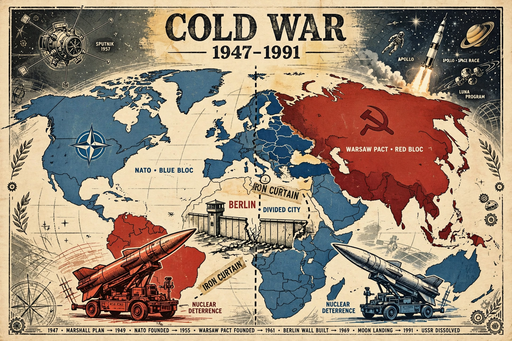

The Cold War was a period of geopolitical tension between the United States and the Soviet Union and their respective allies, the Western Bloc and the Eastern Bloc, that started in 1947, two years after the end of World War II, and lasted until the dissolution of the Soviet Union in 1991. The term cold war is used because there was no large-scale fighting directly between the two superpowers, but they each supported opposing sides in major regional conflicts known as proxy wars.
| Cold War | |
|---|---|
 | |
| Date | 1947 – 26 December 1991 |
| Principal parties | United States / NATO vs. Soviet Union / Warsaw Pact |
| Result | Western Bloc victory; dissolution of the USSR; US as sole superpower |
The wartime alliance of the US, UK, and USSR fractured over the settlement of Eastern Europe. The Truman Doctrine (1947) committed the US to containing communism; the Marshall Plan rebuilt Western Europe, while the USSR consolidated satellite states behind the "Iron Curtain" (a phrase popularised by Winston Churchill in 1946). The 1948–49 Berlin Blockade and airlift, the formation of NATO (1949) and later the Warsaw Pact (1955), and the division of Germany — symbolised by the Berlin Wall from 1961 — defined the confrontation in Europe.
Soviet leader Mikhail Gorbachev's reforms (glasnost and perestroika) and his refusal to prop up Eastern European regimes led to the fall of the Berlin Wall in November 1989, the reunification of Germany, and the dissolution of the Soviet Union on 26 December 1991, ending the Cold War and leaving the United States as the world's sole superpower.
Key figures included US Presidents Truman, Eisenhower, Kennedy, Nixon, and Reagan, and Soviet leaders Stalin, Khrushchev, Brezhnev, and Gorbachev; flashpoints such as the Brandenburg Gate became enduring symbols of the divided world.
From Wikipedia, the free encyclopedia (recreated from memory).